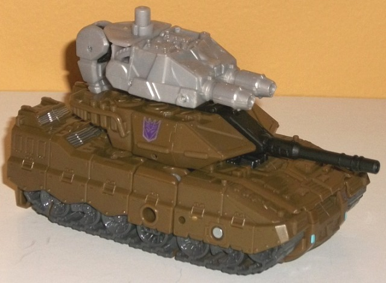
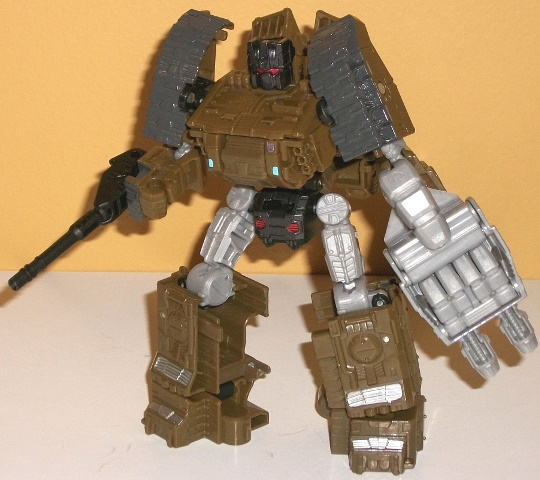
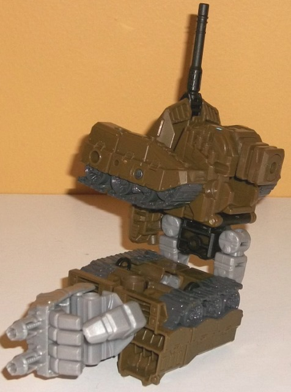
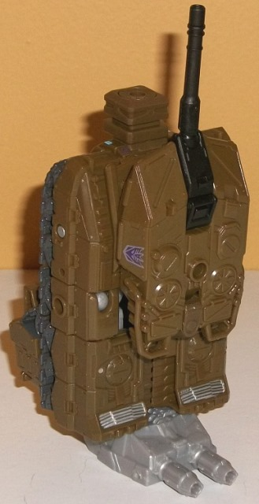

Allegiance
: Decepticon
Size
: Deluxe
Difficulty of Transformation to Robot:
Easy
Difficulty of Transformation to Leg
:
Very Easy
Difficulty of Transformation to Arm
:
Easy
Color Scheme
: Dark dull olive green,
very dark glossy gray, and some black, light milky gray, silver, dark metallic
gunmetal gray, red, and light sky blue
Rating
: 7.3


Brawl is the only completely
new mold for the Combiner Wars Combaticon team, and he's a tank, as he's
pretty much always been. The proportions for this mode are generally pretty
good, though the turret seems a little "sunk in" to the body of the vehicle
compared to most tank TFs. This leads to my biggest issue with this mode--
the turret can't rotate or even move up and down. This is mostly due to
the transformation for his various modes, but still... we've got MINICON
tanks that can rotate their turrets, but not a deluxe? That's rather unacceptable
at this scale, combiner part or no. The color scheme is also a bit one-note
in this mode-- he's nearly all dull dark olive green, which is a darker,
less interesting color than Brawl's toys usually get, even if it does certainly
fit the alt mode. There's some glossy dark gray paint used on the treads
which helps a little, as well as a black main gun and a couple of silver
paint apps on the vents towards the rear. Still, more color, even if it
was several more silver paint apps, was definitely needed. I mean, Brawl's
mold detailing is rather impressive; fake "bolts" on panels, vents, fans,
treads, handlebars... it's all molded into Brawl's tank mode, and quite
nicely, just begging for some paint to highlight them. The mold detailing
on the back end is a bit odd, though, as he's rather hollow back there,
with only some spikes molded inside (in preparation for his remold into
a drill tank down the line, I guess) and unpainted taillights. The way
Brawl's hand/foot/gun accessory can combine with this mode is quite cool;
instead of just plugging into the side and being a bit of an eyesore, a
peg flips out behind the turret for it to plug into, becoming dual cannons
on top of Brawl's regular turret. The mold detailing on this dual-barreled
weapon is also fairly impressive, with some engine-like details on the
top, though the weapon itself is an undetailed, blah light milky gray.
Brawl's robot mode transformation
is fairly simple, as are most CW deluxes'; you pull out and extend the
legs that are formed by the back section, pull out the sides to form the
arms, and rotate down the waist while popping up the head and folding the
turret piece up a bit. Brawl GENERALLY looks good in this mode, with pretty
proportional legs, a nice barrel chest, and a turret that stays on his
back without being too large and becoming too obviously "back kibble".
(Otherwise, he has nothing I'd consider "extras" in this mode.) That said,
the upper arms look a bit odd being hollow behind the treads, and the lower
arms are way too short-- if you have him actually hold any weapon there's
no way he's going to be able to bend that arm at the elbow. Luckily, there
are ports on the side of each lower arm so he can still "hold" weapons
that aren't actually in his hands. (You can hold Brawl's detachable turret
weapon in his hand, on the side of each lower arm, or keep it on the back
in a more G1-accurate position.) The biggest issue here is with the waist--
it doesn't fold up into the lower body enough, and there is a very noticeable
gap between the bottom of Brawl's chest and his waist. There also isn't
any real tabs that the waist section slips into, so the waist can come
undone from its robot position more easily than I'd like. The mold detailing
on Brawl's robot parts is pretty decent, with some vents and panels on
his upper legs and waist. His headsculpt is also very well-done, being
pretty much a more-detailed version of his G1 head without any other real
deviations. Brawl's color scheme is considerably more varied in this mode,
with the glossy gray paint on the treads behind much more obvious, along
with some really nice dark metallic gunmetal paint on his head and waist.
He also has light milky gray on his upper legs-- it does provide a much-needed
lighter color to Brawl's color scheme, but it's still that really blah
shade I wish Hasbro would stop using in favor of a more metallic shade
of the color. Brawl also has some red for his optic visor and on his waist,
and just a teeny bit of light blue on his chest-- which looks quite good
against the olive green, to the point where I wish it was used just a bit
more. For articulation, Brawl can move at the neck (at two points), shoulders
(at three points), elbows (at two points, though it's still restricted
because of the size of the upper arms), waist, hips (at two points), knees,
and he does have ankle tilts as well. Thus, except for the aforementioned
restriction on the lower arms because of the design, he's pretty poseable.


As with most CW arm
modes, the arm mode starts with the robot mode. The chest is rotated up,
the combiner port out, the arms to the sides, the waist to its tank mode
position, and then the legs are plugged together with the hand accessory
fitted into the bottom of the feet. This is one of the weakest-looking
arm modes in the line, honestly-- it's bulky and powerful-looking (as is
any mode with this toy), but it has some major flaws, the most obvious
of which is that the bulky waist piece makes the legs that form the middle
of the arm very obviously legs. Usually with CW arm modes yes, the normal
robot legs are notably part of the middle of the combined arm mode, but
they aren't so far apart. It's easy to "pretend" they're one piece. Not
so with Brawl's arm mode-- he has two "mini-middle arms" connecting the
top and bottom portions. The upper section is the next weakest-- having
Brawl's regular arms going out from the shoulder at such an angle looks
a bit "off"-- they should have been able to be moved back, but still stay
vertical. Either that, or the tank turret piece should have been able to
move up more. Either way, there isn't enough "mass" above the shoulder
connection point for my liking, with a bit too MUCH mass a bit below the
shoulder connection point. I just don't like how it looks. The lower section
is a bit wide, but still okay-- however, the legs come unpegged a bit too
easily, which is the most annoying part of this mode. As with most CW arm
modes, in this mode Brawl can move at the shoulder (at two points), elbow
(at two or three points, depending on whether the robot knees are facing
forward or not), wrist, thumb (at two points), and at the base of his four
fingers (all moving as one joint).
In leg mode, Brawl is
pretty simple, but with a unique twist I didn't expect. Yes, he is basically
just the tank mode with the combiner port facing upwards and the turret
pushed forwards a bit to function as a nice "knee", but the rear sixth
or so of the tank mode actually folds back behind to make his tank mode
the same length as the other leg mode CW deluxes-- with the foot accessory
plugged in on the bottom, of course. This is Brawl's most solid mode, with
the shape clearly looking like a lower leg with no real extras. The tank
turret and gun make for a nice "kneecap" and help hide the combiner port
at least a little bit. As with all CW leg modes, Brawl can move at the
knee (at two points) and can rotate at the ankle.
Combiner Wars Brawl
has some good points-- he's got a solid leg mode, a pretty good tank mode
(though the turret not moving is unacceptable), and some good aspects about
his robot mode, such as well-proportioned legs and excellent mold detailing.
However, the aforementioned unmoving turret, the robot mode awkwardness
around his chest, waist, and arms, and the proportional maladies in his
arm mode make him my least favorite deluxe mold in the Combiner Wars line.
Decepticon Operational Status Update,
reported by Soundwave:
Brawl may run on Energon, but anger
is his true fuel. Plenty of Decepticons have nasty tempers, but it's more
than a bit disconcerting to meet a tank with a hair trigger. You would
think that massive rage could cause trouble inside an elite military unit,
but it's just the opposite for Brawl. He's most effective when he's furious,
so much so that his comrades intentionally needle and frustrate him in
combat to make sure he's at his best. In addition to the shells from his
tank turret, his twin sonic cannons deliver massive damage, and his electron
blaster never leaves his hand. With fellow Combaticons forms Bruticus.
CONCLUSION: Combat approved and endorsed.
HISTORY (extracted from compulsory
biographical download):
Brawl has learned more from the leadership
of Onslaught than any other Combaticon team member, mainly because he has
to be told things over and over again. He's not winning any spelling contests,
but his focused battlefield fury is more than enough for the needs of his
commander. Forms either an arm or a leg of Bruticus, the combined form
of the Combaticons.
Review by Beastbot